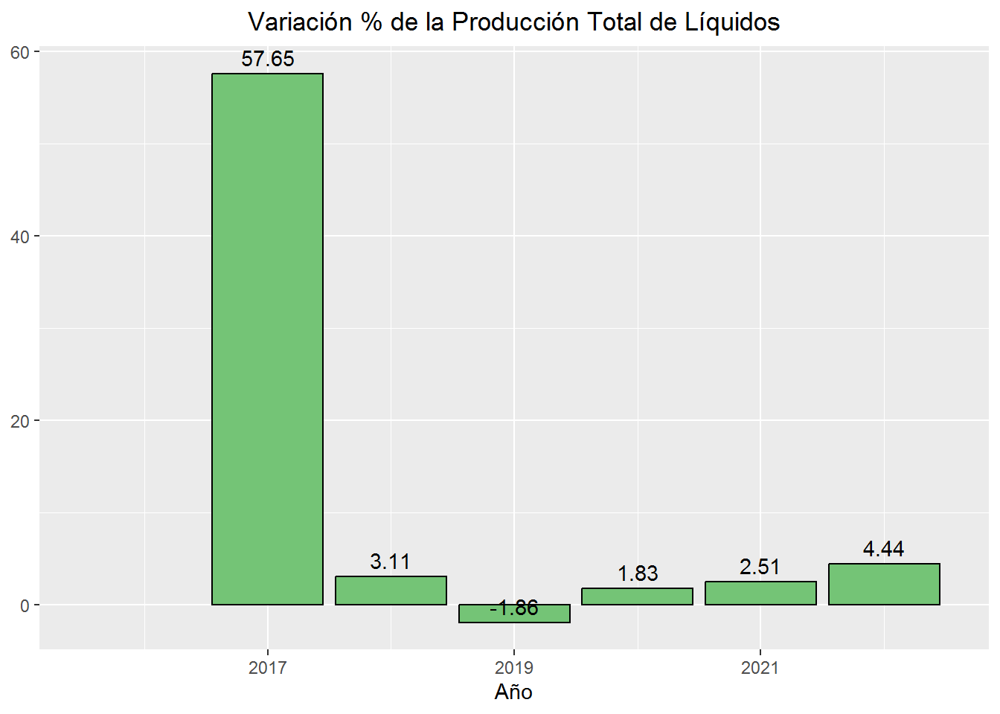
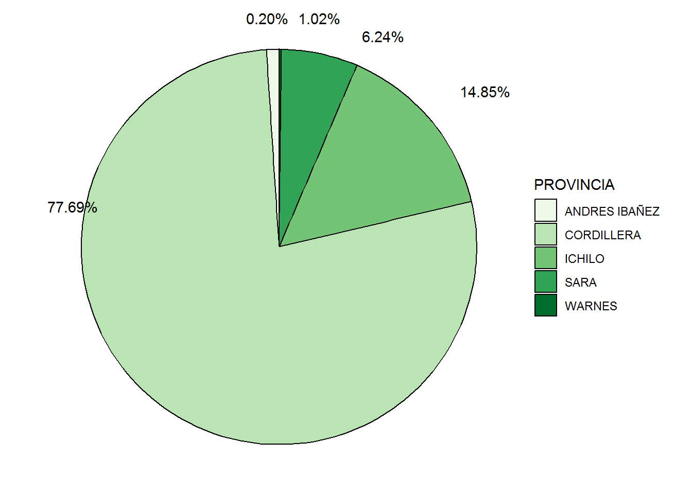

El presente análisis fue inspirado en el boletín estadístico de Hidrocarburos de Santa Cruz del Instituto Cruceño de Estadística (ICE). Muchos de los datos fueron suministrados tanto por el Viceministerio de Exploración y Explotación de Recursos Energéticos como de la Dirección de Minas, Hidrocarburos y Energía.
Líquidos
Los líquidos de petróleo, comúnmente conocidos como crudo, son la materia prima clave para la producción de una amplia gama de productos. Estos incluyen gasolina, diésel, queroseno, aceites lubricantes, asfalto, y productos petroquímicos que se utilizan en la fabricación de plásticos, fertilizantes y productos químicos.
Generalidades
Veamos ahora algunos datos de conocimiento general dentro del rubro petrolero boliviano y cruceño.
Bolivia
Bolivia cuenta con 4 departamentos productores de liquidos: Tarija, Santa Cruz, Chuquisaca y Cochabamba.
Segundo mayor productor
Al 2022 a nivel nacional, Santa Cruz fue el segundo productor con una participación del 39.6%.
Santa Cruz
Santa Cruz cuenta con 5 provincias productoras de líquidos: Cordillera, Ichilo, Sara, Warnes y Andrés Ibáñez. Cordillera produjo en 2022 un 81.7% de la producción del departamento.
Histórico de la Producción Trimestral de Líquidos
Code
#Creamos el vector con los meses por número:nmeses <-c(1,2,3,4,5,6,7,8,9,10,11,12)#Creamos la columna que contenga el vector:data_hidro <- data_hidro %>%mutate(nMESES =rep(nmeses, length.out =n()))#Usamos la función quarter para crear por orden los trimestres:data_hidro$TRIM <-quarter(data_hidro$nMESES, type ="quarter", fiscal_start =1)#Creamos el histograma:hist1 <- data_hidro %>%group_by(AÑO, TRIM) %>%summarise(produ_total =sum(LIQUIDOS))g <-ggplot(hist1, aes(x = TRIM, y = produ_total))+geom_bar(position ="dodge",stat ="identity", fill ="#74C476", color ="black")+labs(title ="Producción trimestral de líquidos en Santa Cruz", x ="Trimestre", y ="Producción total (MBbls)") +facet_grid(~AÑO)+scale_y_continuous(labels = scales::comma_format(scale =1e-3, big.mark =",")) #Línea de código para modificar labels en Y.ggplotly(g)
En el último trimestre de la gestión 2019 y de la gestión 2020 se registraron dos los picos más altos en producción total desde 2016. Dejando como mínima la producción del segundo trimestre de la gestión 2016.
Gestión 2023
Los resultados totales de producción para el año 2023 alcanzaron a registrarse hasta el tercer trimestre, y de manera incompleta.
Code
#Creamos una tabla ilustrativa con el total producido por AÑO:tab1 <- data_hidro %>%group_by(AÑO) %>%summarise(produ_total =sum(LIQUIDOS)) %>%mutate(produ_total = scales::comma(produ_total, big.mark =',')) #Código para visibilizar el separador de miles.tab1 %>%#kable pertenece a la librería kableExtras kable(caption ="Producción Total de Liquidos por Año", col.names =c("Año","Producción Total"), align ="c") %>%kable_styling(bootstrap_options =c("striped","hover","condensed","responsive")) # "striped": Agrega un efecto de filas alternas sombreadas para mejorar la legibilidad.
Producción Total de Liquidos por Año
Año
Producción Total
2016
2,964,610
2017
4,673,617
2018
4,819,012
2019
4,729,452
2020
4,815,919
2021
4,936,956
2022
5,156,121
2023
2,689,866
Code
# "hover": Agrega un efecto de resaltado cuando el mouse pasa sobre las filas.# "condensed": Reduce el espacio entre las celdas para un diseño más compacto.# "responsive": Hace que la tabla sea sensible a la pantalla, ajustándose automáticamente para adaptarse a diferentes tamaños de pantalla.
Variación de la producción respecto al año anterior
Code
hist2 <- data_hidro %>%group_by(AÑO) %>%filter(AÑO!=2023) %>%#Quitamos cualquier valor de ese año por falta de información.summarise(produ_total =sum(LIQUIDOS)) %>%mutate(var_anual = (produ_total /lag(produ_total)-1)*100) #'lag' compara el valor actual con el valor anterior en una secuencia.ggplot(hist2, aes(x=AÑO, y = var_anual)) +geom_bar(position ="dodge", stat ="identity", fill="#74C476", color ="black")+geom_text(aes(label =round(var_anual,2)), position =position_dodge(width =1), vjust =-0.5)+labs(title ="Variación % de la Producción Total de Líquidos", x ="Año", y =NULL ) +theme(plot.title =element_text(hjust =0.5)) #Opción centrar el título del gráfico.

De 2016 a 2017, se dió un “boom” petrolero en Bolivia, debido a una combinación de factores, entre los que se destacan:
La puesta en marca de nuevos campos petroleros.
El aumento de la inversión en exploración y producción.
El aumento de la demanda interna de hidrocarburos.
En el caso específico de Santa Cruz, el crecimiento de la producción de hidrocarburos líquidos se debió también a la mayor participación de las empresas privadas en la actividad petrolera. Lo que contribuyó a aumentar la inversión y la producción en el departamento.
Provincias Productoras de Líquidos
Veamos un poco el historial productivo de las principales provincias de Santa Cruz, así como su participación de cada una en la producción total desde 2016 hasta el 2022.
Code
library(RColorBrewer) #Para establecer una paleta de colores. Más colores en:#https://r-graph-gallery.com/38-rcolorbrewers-palettes.htmlmiPaleta <-brewer.pal(5, "Greens") #Guardo en una variable la paleta de colores seleccionada.torta1 <- data_hidro %>%group_by(PROVINCIA) %>%filter(AÑO!=2023) %>%summarise(produ_total =sum(LIQUIDOS)) %>%mutate(porcion = produ_total /sum(produ_total))library(ggrepel) #Librería para 'geom_text_repel', repelencia entre textos. Que no se encaramen.ggplot(torta1, aes(x ="", y = porcion, fill = PROVINCIA)) +geom_bar(stat ="identity", width =0.5, color ="black") +coord_polar("y", start =0)+scale_fill_manual(values = miPaleta)+geom_text_repel(aes(label = scales::percent(porcion)), x =1.36) +#Función de librería 'ggrepel'theme_void()

Desde el 2016 hasta el Trimestre IV-2022, la provincia de Cordillera fue una de las más productivas en el departamento. Mientras que la provincia Andrés Ibañez y Warnes han sido las de menor producción.
Code
#Ordenamos los datostab2 <- data_hidro %>%group_by(AÑO, PROVINCIA) %>%#Agrupamos los datos por año y Provincia.filter(AÑO !=2023) %>%summarise(produ_total =sum(LIQUIDOS)) %>%#Creamos la nueva columna.arrange(desc(produ_total)) %>%#Ordenamos de mayor a menormutate(produ_total = scales::comma(produ_total, big.mark =',')) %>%mutate( ID =row_number()) %>%#Agregamos un identificador único.pivot_wider(names_from = AÑO, values_from = produ_total) %>%#Transforma los datos de formato LARGO a formato ANCHO. Identifica los valores en AÑO, y crea columnas para cada uno. Luego llena esas columnas con los valores de produ_total correspondientes.select(PROVINCIA,`2016`,`2017`,`2018`,`2019`,`2020`,`2021`,`2022`) #Ordenamos las variables.tab2 %>%kable(caption ="Producción Anual de Liquidos en Provincias", align ="c") %>%kable_styling(bootstrap_options =c("striped","hover","condensed","responsive"))
Producción Anual de Liquidos en Provincias
PROVINCIA
2016
2017
2018
2019
2020
2021
2022
CORDILLERA
1,824,566
3,609,353
3,654,739
3,553,085
3,965,380
4,115,547
4,213,290
ICHILO
670,561
679,132
803,597
849,013
539,308
535,436
689,418
SARA
378,705
316,546
303,843
275,759
270,413
242,645
215,522
ANDRES IBAÑEZ
84,720
62,664
50,790
45,483
34,605
27,880
20,740
WARNES
6,057
5,921
6,044
6,110
6,213
15,448
17,150
Code
#Librería para generar este tipo de gráficos.library(ggridges)area1 <- data_hidro %>%group_by(PROVINCIA,AÑO) %>%filter(AÑO!=2023) %>%summarise(produ_total =sum(LIQUIDOS))a1 <-ggplot(area1, aes(x = AÑO, ymin =0, ymax = produ_total, fill = PROVINCIA))+geom_ribbon(color ="black")+#GRÁFICO DE ÁREAS QUE FUNCIONA MEJOR CON 'ggplotly'scale_fill_manual(values = miPaleta)+labs(title ="Producción Anual en Provincias", x ="Año", y ="Producción Total (MBbls)")+scale_y_continuous(labels = scales::comma_format(scale =1e-3, big.mark =","))ggplotly(a1, tooltip =c("AÑO", "produ_total", "PROVINCIA"))
Source Code
---title: "HIDROCARBUROS - UN ANALISIS DESCRIPTIVO"author: "Augusto Alvarez"date: "`r Sys.Date()`"format: html: code-tools: true code-fold: true theme: flatly toc: True html-math-method: katex css: styles.csseditor_options: chunk_output_type: console---```{r setup, include=FALSE}knitr::opts_chunk$set(echo =TRUE, message =FALSE,warning =FALSE)library(kableExtra) #Para crear tablas ilustrativas interesantes.library(openxlsx) #Para descargar archivos desde la web.library(tidyverse)library(janitor)library(flextable)library(dplyr)library(plotly) #Librería para gráficos interactivos.setwd("E:/(ICE) Instituto Cruceno de Estadistica/Historicos Hidrocarburos 2023")data_hidro <-read.xlsx("E:/(ICE) Instituto Cruceno de Estadistica/Historicos Hidrocarburos 2023/Hidros.xlsx") %>%mutate(ID =row_number())as_tibble(data_hidro)options(scipen=999)```## IntroducciónEl presente análisis fue inspirado en el boletín estadístico de *Hidrocarburos de Santa Cruz* del Instituto Cruceño de Estadística (ICE). Muchos de los datos fueron suministrados tanto por el Viceministerio de Exploración y Explotación de Recursos Energéticos como de la Dirección de Minas, Hidrocarburos y Energía.## LíquidosLos líquidos de petróleo, comúnmente conocidos como crudo, son la materia prima clave para la producción de una amplia gama de productos. Estos incluyen gasolina, diésel, queroseno, aceites lubricantes, asfalto, y productos petroquímicos que se utilizan en la fabricación de plásticos, fertilizantes y productos químicos. ### GeneralidadesVeamos ahora algunos datos de conocimiento general dentro del rubro petrolero boliviano y cruceño.::: callout-note## BoliviaBolivia cuenta con 4 departamentos productores de liquidos: Tarija, Santa Cruz, Chuquisaca y Cochabamba.:::::: callout-note## Segundo mayor productorAl 2022 a nivel nacional, Santa Cruz fue el segundo productor con una participación del 39.6%.:::::: callout-note## Santa CruzSanta Cruz cuenta con 5 provincias productoras de líquidos: Cordillera, Ichilo, Sara, Warnes y Andrés Ibáñez. Cordillera produjo en 2022 un 81.7% de la producción del departamento.:::## Histórico de la Producción Trimestral de Líquidos```{r}#Creamos el vector con los meses por número:nmeses <-c(1,2,3,4,5,6,7,8,9,10,11,12)#Creamos la columna que contenga el vector:data_hidro <- data_hidro %>%mutate(nMESES =rep(nmeses, length.out =n()))#Usamos la función quarter para crear por orden los trimestres:data_hidro$TRIM <-quarter(data_hidro$nMESES, type ="quarter", fiscal_start =1)#Creamos el histograma:hist1 <- data_hidro %>%group_by(AÑO, TRIM) %>%summarise(produ_total =sum(LIQUIDOS))g <-ggplot(hist1, aes(x = TRIM, y = produ_total))+geom_bar(position ="dodge",stat ="identity", fill ="#74C476", color ="black")+labs(title ="Producción trimestral de líquidos en Santa Cruz", x ="Trimestre", y ="Producción total (MBbls)") +facet_grid(~AÑO)+scale_y_continuous(labels = scales::comma_format(scale =1e-3, big.mark =",")) #Línea de código para modificar labels en Y.ggplotly(g)```En el último trimestre de la gestión 2019 y de la gestión 2020 se registraron dos los picos más altos en producción total desde 2016. Dejando como mínima la producción del segundo trimestre de la gestión 2016.::: callout-caution## Gestión 2023Los resultados totales de producción para el año 2023 alcanzaron a registrarse hasta el tercer trimestre, y de manera incompleta.:::```{r}#Creamos una tabla ilustrativa con el total producido por AÑO:tab1 <- data_hidro %>%group_by(AÑO) %>%summarise(produ_total =sum(LIQUIDOS)) %>%mutate(produ_total = scales::comma(produ_total, big.mark =',')) #Código para visibilizar el separador de miles.tab1 %>%#kable pertenece a la librería kableExtras kable(caption ="Producción Total de Liquidos por Año", col.names =c("Año","Producción Total"), align ="c") %>%kable_styling(bootstrap_options =c("striped","hover","condensed","responsive")) # "striped": Agrega un efecto de filas alternas sombreadas para mejorar la legibilidad.# "hover": Agrega un efecto de resaltado cuando el mouse pasa sobre las filas.# "condensed": Reduce el espacio entre las celdas para un diseño más compacto.# "responsive": Hace que la tabla sea sensible a la pantalla, ajustándose automáticamente para adaptarse a diferentes tamaños de pantalla.```### Variación de la producción respecto al año anterior```{r}hist2 <- data_hidro %>%group_by(AÑO) %>%filter(AÑO!=2023) %>%#Quitamos cualquier valor de ese año por falta de información.summarise(produ_total =sum(LIQUIDOS)) %>%mutate(var_anual = (produ_total /lag(produ_total)-1)*100) #'lag' compara el valor actual con el valor anterior en una secuencia.ggplot(hist2, aes(x=AÑO, y = var_anual)) +geom_bar(position ="dodge", stat ="identity", fill="#74C476", color ="black")+geom_text(aes(label =round(var_anual,2)), position =position_dodge(width =1), vjust =-0.5)+labs(title ="Variación % de la Producción Total de Líquidos", x ="Año", y =NULL ) +theme(plot.title =element_text(hjust =0.5)) #Opción centrar el título del gráfico.```De 2016 a 2017, se dió un "boom" petrolero en Bolivia, debido a una combinación de factores, entre los que se destacan:- La puesta en marca de nuevos campos petroleros.- El aumento de la inversión en exploración y producción.- El aumento de la demanda interna de hidrocarburos.En el caso específico de Santa Cruz, el crecimiento de la producción de hidrocarburos líquidos se debió también a la mayor participación de las empresas privadas en la actividad petrolera. Lo que contribuyó a aumentar la inversión y la producción en el departamento.## Provincias Productoras de LíquidosVeamos un poco el historial productivo de las principales provincias de Santa Cruz, así como su participación de cada una en la producción total desde 2016 hasta el 2022.```{r}library(RColorBrewer) #Para establecer una paleta de colores. Más colores en:#https://r-graph-gallery.com/38-rcolorbrewers-palettes.htmlmiPaleta <-brewer.pal(5, "Greens") #Guardo en una variable la paleta de colores seleccionada.torta1 <- data_hidro %>%group_by(PROVINCIA) %>%filter(AÑO!=2023) %>%summarise(produ_total =sum(LIQUIDOS)) %>%mutate(porcion = produ_total /sum(produ_total))library(ggrepel) #Librería para 'geom_text_repel', repelencia entre textos. Que no se encaramen.ggplot(torta1, aes(x ="", y = porcion, fill = PROVINCIA)) +geom_bar(stat ="identity", width =0.5, color ="black") +coord_polar("y", start =0)+scale_fill_manual(values = miPaleta)+geom_text_repel(aes(label = scales::percent(porcion)), x =1.36) +#Función de librería 'ggrepel'theme_void()```Desde el 2016 hasta el Trimestre IV-2022, la provincia de Cordillera fue una de las más productivas en el departamento. Mientras que la provincia Andrés Ibañez y Warnes han sido las de menor producción.```{r}#Ordenamos los datostab2 <- data_hidro %>%group_by(AÑO, PROVINCIA) %>%#Agrupamos los datos por año y Provincia.filter(AÑO !=2023) %>%summarise(produ_total =sum(LIQUIDOS)) %>%#Creamos la nueva columna.arrange(desc(produ_total)) %>%#Ordenamos de mayor a menormutate(produ_total = scales::comma(produ_total, big.mark =',')) %>%mutate( ID =row_number()) %>%#Agregamos un identificador único.pivot_wider(names_from = AÑO, values_from = produ_total) %>%#Transforma los datos de formato LARGO a formato ANCHO. Identifica los valores en AÑO, y crea columnas para cada uno. Luego llena esas columnas con los valores de produ_total correspondientes.select(PROVINCIA,`2016`,`2017`,`2018`,`2019`,`2020`,`2021`,`2022`) #Ordenamos las variables.tab2 %>%kable(caption ="Producción Anual de Liquidos en Provincias", align ="c") %>%kable_styling(bootstrap_options =c("striped","hover","condensed","responsive"))``````{r}#Librería para generar este tipo de gráficos.library(ggridges)area1 <- data_hidro %>%group_by(PROVINCIA,AÑO) %>%filter(AÑO!=2023) %>%summarise(produ_total =sum(LIQUIDOS))a1 <-ggplot(area1, aes(x = AÑO, ymin =0, ymax = produ_total, fill = PROVINCIA))+geom_ribbon(color ="black")+#GRÁFICO DE ÁREAS QUE FUNCIONA MEJOR CON 'ggplotly'scale_fill_manual(values = miPaleta)+labs(title ="Producción Anual en Provincias", x ="Año", y ="Producción Total (MBbls)")+scale_y_continuous(labels = scales::comma_format(scale =1e-3, big.mark =","))ggplotly(a1, tooltip =c("AÑO", "produ_total", "PROVINCIA"))```